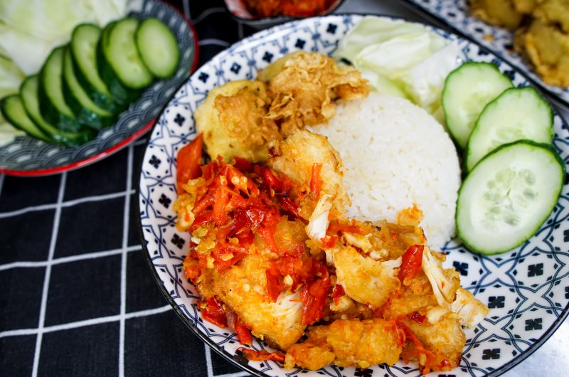

Ayam Geprek

Ayam Geprek, otherwise known as Smashed Chicken. If you’re not new to the world of Indonesian food, then you would recognise this as the younger sister of Ayam Penyet… which also means Smashed Chicken. Confusing? Yes. I’m still not too clear if there’s a distinct difference, except that Ayam Geprek skips some flavouring steps and goes straight to the good stuff: crispy chicken and that spicy good sambal.
Ingredients
- 300 grams of Chicken
- Batter
- 1/4 cup rice flour
- 1/4 cup cornstarch
- 1 egg
- 1/2 tsp baking powder
- 1/2 cup cold water
- Sambal
- 3 Red Chillies
- 3 Thai Birds Eye Chillies
- 1-2 Shallots
- 1 garlic clove
- 1 tsp salt
- 1 tsp sugar
Steps
- Marinate chicken with salt and pepper.
- While that’s happening, make the batter. Add the marinated chicken to the batter.
- Add battered chicken to pot of hot oil. Do not overcrowd the pan and keep the heat to a medium.
- Take it off once chicken cooks, and coating is a golden brown.
- Using the same pan and oil, cook the ingredients for the chilli sambal. Not for long, just until chilli pieces cook and blisters.
- Pop in a pestle and mortar, alternatively you can pop use a food processor. Add sugar and salt and give it a nice good grind.
- Once that’s done, scoot it to one side, and add the fried chicken bites. Smash the chicken! Lay the sambal over the top, and give it another smash to let the chilli get everywhere.
- Serve this with rice, and some cucumbers and cabbages to help temper the heat.
Return To Home